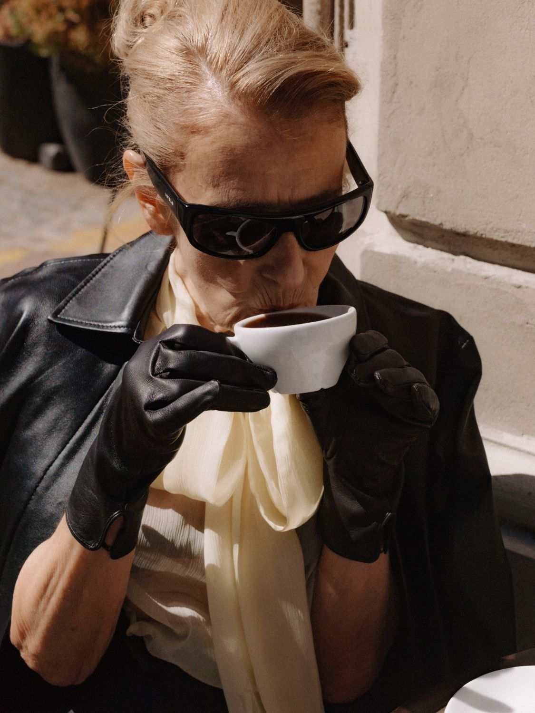
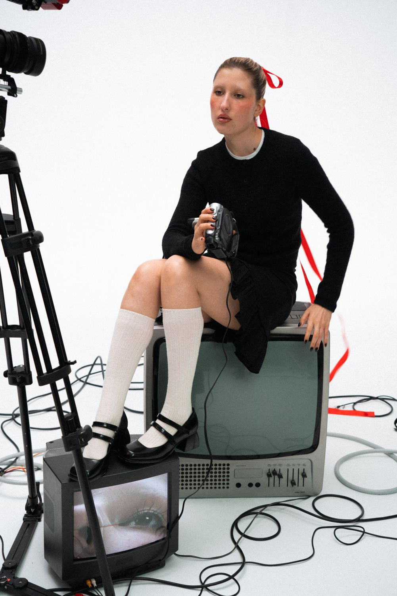
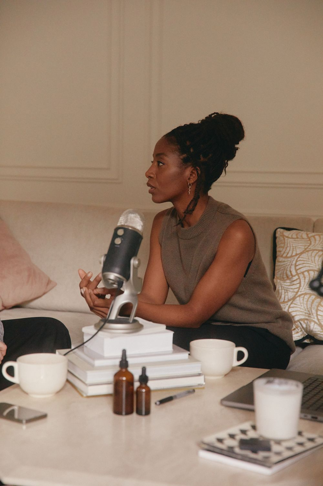

Session with
Session with Jade: performance, presence and media coaching for public figures, musicians, actors and influencers in London
For people who get looked at for a living
Actors, musicians, public figures, influencers and the people who represent them.
Hi, I'm Jade
I help people in the public eye stay calm, clear and themselves when the cameras, the crowd and the comments are all on them.
Session with Jade is one to one performance, presence and media coaching for actors, musicians, public figures, influencers and the managers and publicists who represent them. It is run by Jade Matthew, a working actress with twenty years of screen and radio credits, a Lecturer at LAMDA, clinical hypnotherapist and Master NLP Practitioner. London based, working in person and online worldwide.
Twenty years on screen and on air, including
- BBC
- HBO
- Netflix
- Channel 4
- ITV
- Sky
- EastEnders
- The Archers
- BBC
- HBO
- Netflix
- Channel 4
- ITV
- Sky
- EastEnders
- The Archers
The work
Three things break down when you are being watched. I train all three.
Performance coaches tend to work on the outside. Communications people tend to work on the words. Therapists tend to work on the inside and stop there. You are one person, and you need all three in the room at once.
Performance
The problem
You speed up, your voice goes thin, your shoulders rise and you forget the camera is a person. By the eleventh interview of the day you start to look bored.
What changes
A voice and body that hold up when you are tired, and a lens you can talk to like it is one person.
Common issues and outcomes
- Stiff and self conscious on cameraPresent and easy to watch
- Rushing and filling every silenceComfortable holding the pause
- Flat by the end of a press dayThe same energy on the last interview as the first
- Not knowing where you are in the shotCamera skills you can rely on
Communication
The problem
The question you were hoping to avoid arrives, and you either freeze or say something you did not mean. The clip that travels is never the one you wanted.
What changes
Answers that sound like you, a clear line on what you will not discuss, and a way back to what you came to say.
Common issues and outcomes
- Explaining something you made instinctivelyTalking about the work without flattening it
- Hostile or personal questionsStaying steady and saying what you meant
- Rambling in long interviewsThe point first, in your own words
- Brand and press lines that sound scriptedMessages that sound like you
Psychology
The problem
Anxiety before, during and for three days afterwards. Imposter feelings that arrive precisely when it goes well. Reading the comments, and what that does to the next one.
What changes
A reset you can use in the ninety seconds before you go on, and recovery, so a bad one does not contaminate the next six.
Common issues and outcomes
- Fear of exposure and being found outSafe enough to be yourself in public
- Self doubt in front of certain peopleSteady whoever is in the room
- Overthinking and rehearsing the wrong thingsPreparing for what actually happens
- Old patterns from long before the careerPatterns you understand and can change
The most powerful coaching I've done. Usually I can't stick with it, but this approach has changed so much so quickly, I can't believe it.Ciara · CEO
Press day, 9am
Say you have a junket on Tuesday. Twenty interviews, four minutes each, the same six questions in a slightly different order.
By the eleventh you are tired and answering on autopilot. Someone asks about the thing you did not want to talk about, you laugh it off a bit too hard, and that is the clip that goes round on Wednesday.
The same week, with Jade
- 01The Thursday before. We go through the questions you will actually be asked, including the one you are dreading, and find answers that sound like you.
- 02Friday. We rehearse on camera. I ask like a tired journalist, I interrupt and I push, then we watch it back the way actors review a take.
- 03Monday night. You run the hard answers again on your own in Mara, as many times as you like.
- 04Tuesday. A ninety second reset between interviews, so number eleven gets the same person as number one.
Where this comes from
I learned this on set, not from a manual.
I have worked as a professional actress for twenty years across television, film, radio and video games, and I have coached more than five hundred people. I have sat in the chair, on the panel and in front of the microphone on days when I was exhausted and the answer still had to land.
The outside
What the room sees
- Being looked atAnd what your body does about it.
- Camera skillsKnowing where you actually are in the shot.
- Live talkingUnscripted, with no second take.
- VoicePace, range and the pauses nobody takes.
- Public perceptionHow you are being read.
- ContentVideo, socials and speaking to a lens alone.
The inside
What is happening underneath
- AnxietyBefore, during and for three days afterwards.
- Fear of exposureOf being found out, of getting it wrong.
- Imposter feelingsThat arrive precisely when it goes well.
- The commentsAnd what reading them does to the next one.
- PerfectionismOverthinking and rehearsing the wrong things.
- Old patternsThat predate the career by about twenty years.
Actors and performers
Junkets, festivals, panels, awards, first leads, and the self tape that has to be sent tonight.
First time carrying a press campaign.
Answers that hold up on the twentieth interview.
An awards night with a speech in your pocket.
Thirty seconds you are glad you said.
Musicians and artists
Album press, stage talk, documentary sit downs, and being asked to explain something you made instinctively.
Interviews about work that is genuinely personal.
Talking about it without giving away more than you want to.
Talking between songs to a room of thousands.
Stage talk that sounds like you.
Public figures and influencers
Broadcast, podcasts, live streams, long lead profiles, and the first appearance after a period out of view.
Your face is the brand and the comments never stop.
Knowing what you stand for, and staying yourself.
Hostile questioning on live radio.
Holding a line without sounding like somebody holding a line.
Who you would be working with
I have done the press.
I am a working actress with screen and radio credits across the BBC, HBO, Netflix, Channel 4, ITV and Sky, and I have sat in the chair, on the panel and in front of the microphone on days when I was exhausted and the answer still had to land. That is the part people recognise within about ninety seconds, and it is the reason they tend to stop performing at me and start actually working.
Alongside that I am a Lecturer at LAMDA, a clinical hypnotherapist and a Master NLP Practitioner, which is where the inside half of this comes from. Anxiety, imposter feelings and the fear of being seen are all trainable, and the reason capable people lose access to themselves at exactly the wrong moment is well understood once somebody explains it to them properly.
That work became the ICOP Method. More than five hundred people have been through it, and the mechanism underneath turns out to be the same whether the pressure is commercial or public.
About Jade
Jade Matthew
- Actress, voice artist and audio director
- BBC Audio Drama Award
- Screen and radio credits across BBC, HBO, Netflix, Channel 4, ITV and Sky
- Lecturer at LAMDA
- Clinical hypnotherapist
- Master NLP Practitioner
- More than 500 people coached
The ICOP Method
Identify
We understand what is actually happening: when, in which rooms, and what it is costing you.
Clear
We work on the patterns, beliefs and responses getting in your way.
Own
You build practical tools to change your state and behaviour on purpose: breath, voice, body and attention.
Perform
You rehearse the real situation until you respond differently when it matters.
Rehearse the interview before it happens.
Session with Jade · performance under pressureSituations
Twelve moments I prepare people for.
- 01Press junkets
- 02Long lead profiles
- 03Live television
- 04Radio and podcasts
- 05Panels and Q and A
- 06Awards and acceptance
- 07Stage talk and live shows
- 08Hostile interviews
- 09Live streams and camera to camera content
- 10Brand partnership and launch days
- 11Self tape and audition
- 12The first appearance after time away



Personal brand coaching
For people whose face is the brand.
Influencers, creators, presenters and public figures. You are on camera most days, your name is the product, and your audience notices everything.
I spent twenty years being filmed for a living. I know what the lens picks up, how to sound like yourself on the fortieth take, and what to do when a clip of you is going round for the wrong reasons. We work on how you come across on camera and in person, what you want to be known for, and how to stay steady when the numbers, the comments and the pressure all land in the same week.
Ways to work together
Four ways to bring me in.
Everything is by application and quoted in writing after a free 20 minute call, with no meter running and nothing added later.
Press and campaign preparation
- Ahead of a release, tour, campaign, launch or announcement
- The answers you will actually be asked to give
- Rehearsed on camera, under something close to real conditions
- Until it holds up when you are tired and it is the eleventh interview of the day
Roster retainer
- Ongoing access across the people you represent
- For when several clients are in campaign at once
- Short notice availability when something lands tomorrow
- Priority scheduling, and no new fee to negotiate every time
Personal brand coaching
A block of six to ten sessions on how you come across on camera and in person, what you stand for, and staying yourself under constant attention.
The confidence work underneath
For when the problem is not the interview. Anxiety about being seen, imposter feelings that have grown with the career, or a fear that has started costing you opportunities. Drawing on clinical hypnotherapy and NLP alongside the performance work.
Less time worrying and more time doing. I kicked some unhealthy habits, started prioritising friends and family again, built confidence at work and achieved a promotion.Jack · Head of Music
Between sessions
Run the answers again on a Sunday night.
Where it suits you, practice carries on between sessions through Mara, my interactive performance coach. Camera on rehearsal, scored across six areas including pace, pauses, vocal range, clarity and presence, so you can run the answers again without needing me in the room.
Session Studio sits inside Mara. Write or paste the script, record it with a prompter that follows your pace so your eyes stay on the lens, and get a read on how you came across before anyone else sees it. Entirely optional, and never a condition of the work.
Mara · Studio
Album announcement
Take 3 of 3 · 58 s
Illustrative screen
The part you will ask about first
Nothing leaves the room.
I sign whatever you need me to sign, before we start, including production side and party side agreements where a studio, broadcaster or office requires it. I do not name clients, I do not confirm or deny who I work with, and I do not use this work as content in any form, which includes the anonymised version.
Where we record rehearsal, and we usually do because playback is most of the value, the footage belongs to you. It is deleted on request and never kept as an example. Where Mara is used the account sits with you rather than with the agency, so nothing about unreleased work or unannounced plans passes through anybody else's hands.
I have spent twenty years on the other side of this. I know what it costs somebody when a preparation session turns into an anecdote at a dinner party, and I have no interest in being the person who does that.
For managers, agents and publicists
Send me your next difficult one.
The quickest way to work out whether this is useful to you is to put one client through it, ideally somebody with something real in the diary in the next few weeks.
Twenty minutes on the phone first, so I understand the roster, what is coming up and how you like to work.
Questions
What people ask before they book.
Who is Jade Matthew?
Jade Matthew is a London based performance coach and working actress. She has twenty years of screen and radio credits across the BBC, HBO, Netflix, Channel 4, ITV and Sky, a BBC Audio Drama Award, and she lectures at LAMDA. She is also a clinical hypnotherapist and Master NLP Practitioner. Through Session with Jade she coaches actors, musicians, public figures, influencers and the people who represent them.
What is Session with Jade?
Session with Jade is one to one performance, presence and media coaching for people in the public eye. It covers how you come across on camera, in interviews, on stage and online, and how you handle the pressure of being watched. The work combines performance training, communication and psychology in one approach, the ICOP Method.
How is this different from media training?
Media training usually works on the words: key messages and how to steer away from a question. I work on the words, the delivery and what is happening underneath at the same time, so your answer still holds up on the eleventh interview of the day, or when someone asks the question you were hoping to avoid.
Do you prepare people for press junkets and interviews?
Yes. Press and campaign preparation covers releases, tours, launches and announcements. We work on the questions you will actually be asked, rehearse on camera under conditions close to the real day, and build a ninety second reset you can use between interviews.
Do you work with musicians and artists?
Yes. Album press, documentary interviews, talking between songs on stage, and talking about work that is personal without giving away more than you want to.
Do you coach influencers and content creators?
Yes, through personal brand coaching. We work on on camera presence, knowing what you stand for and saying it clearly, live streams and podcasts, press and brand partnerships, and handling comments and criticism without it changing how you show up.
Can you help with performance anxiety and stage fright?
Yes, as coaching rather than medical treatment. Alongside the performance work I use clinical hypnotherapy, NLP and breathwork to help with nerves before appearances, imposter feelings and the fear of being judged in public. If you have a diagnosed condition, I am happy to work alongside your GP or therapist.
Is it confidential?
Completely. I sign NDAs and production agreements before we start, I never name clients or confirm who I work with, and I never use the work as content. Rehearsal footage belongs to you and is deleted on request.
Do managers, agents and publicists book you?
Yes. Either for one client ahead of a specific campaign, or on a roster retainer with an agreed number of days each month and short notice availability when something lands tomorrow.
Where are you based, and do you work online?
I am based in London and work in person there, and online with people anywhere in the world, fitted around filming and touring schedules where I can.
How much does it cost?
Fees are on application and quoted in writing after a free 20 minute call. Campaign preparation is a fixed fee agreed in advance, retainers are priced on days per month, and one to one coaching runs in blocks of six to ten sessions.
What is the ICOP Method?
The ICOP Method is the four stage framework Jade Matthew developed from twenty years of performing and coaching. Identify: understand what is actually happening. Clear: work on the patterns, beliefs and responses getting in your way. Own: build practical tools to change your state and behaviour on purpose. Perform: rehearse the real situation until you respond differently when it matters.
Next step
Tell me what is coming up. Twenty minutes, no charge.
© 2026 Jade Matthew · Session Care Ltd · London. This is coaching and performance training, not medical treatment. If you are dealing with a diagnosed condition, please speak to your GP or a mental health professional, and I am happy to work alongside them.